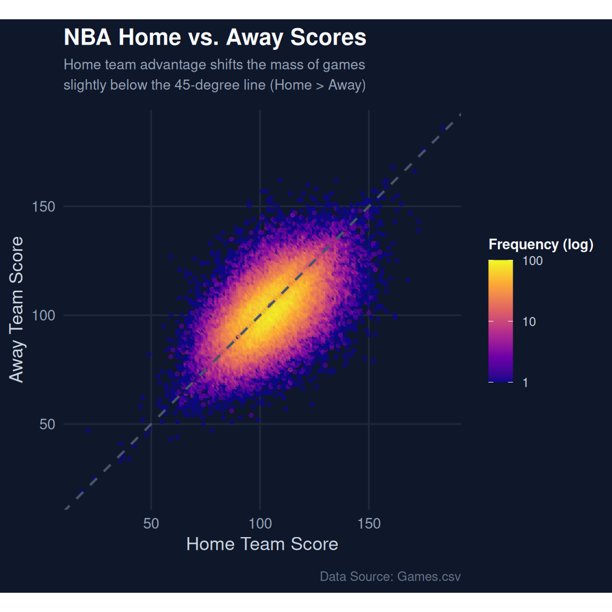

<p>
<strong>Scorigami</strong> is a concept developed by sportswriter Jon Bois to track every unique final score combination that has occurred in a league's history. While originally popularized for the NFL, this chart maps the distribution of historical final scores in the NBA.
</p>
<p>
The diagonal dashed line represents a tie (equal home and away scores). Because NBA games cannot end in a tie, this boundary line remains empty.
</p>
<p>
Notably, the core yellow/orange mass of final scores is shifted slightly <strong>below the diagonal line</strong> (meaning the home score is greater than the away score). This visual skew captures the historical <strong>Home Team Advantage</strong>, showing that home teams consistently outscore away teams.
</p>